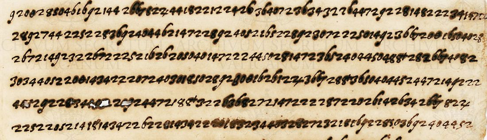
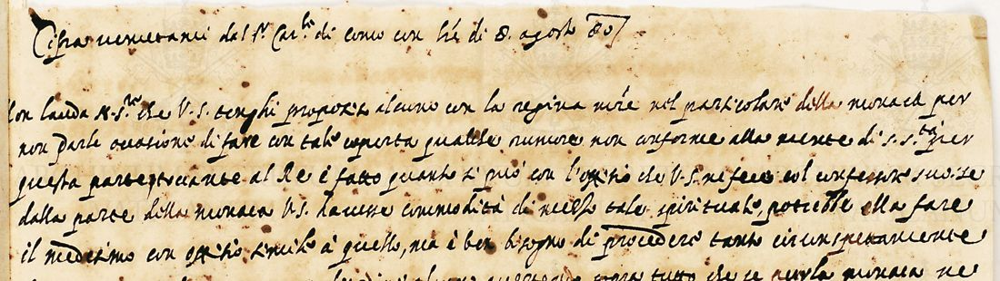

At a glanceExisting decipherment · 1,040 of 1,082 groups (96.1%)
- The letter
- Tolomeo Gallio, Cardinal of Como, papal Secretary of State, to Anselmo Dandini, nuncio in France: the cipher enclosure (“mezzo foglio di cifra”) of his letter from Rome of 8 August 1580.
- Where
- Archivio Apostolico Vaticano, Segreteria di Stato, Francia 283C ff. 89r–90r. DECODE R73, “partially decrypted”, with no date; catalogue item 244.
- The cipher
- Two-digit figures for letters, every second digit even, with one or two forms for the vowels; three-digit groups closed by a mark for words and titles.
- How it was deciphered
- George Lasry recovered the key and decrypted the transcription in 2020; both files are on DECODE. This page takes his text as it is.
- What it says
- A marriage proposal the Pope would take up only on good grounds; then the nun: the nuncio is not to raise her with the Queen Mother, and any reproof of the King must come from the Pope, quietly.
- Still open
- 32 illegible groups and six nomenclator groups without a value.
- Found here
- The date, from the covering letter, and a contemporary clear copy of the second section on f. 91, which agrees with Lasry’s text.
Until 14 October 2026 this enclosure shared a page with R72, Como’s enclosure of 16 May 1580. That one keeps Lasry’s frame and nomenclator but reassigns the letters, a different key, with its own page.
01 The document
Francia 283C holds the Secretariat’s original letters and ciphers to the nuncio in Paris for 1580. R73 is three pages of figures, ff. 89r–90r, on damaged paper with heavy bleed-through. DECODE gives it no date. The record’s attached images supply it:
- ff. 88 and 92 are Como’s clear letter, signed “Il Car.le di Como” and dated “Di Roma a 8 d’ag.to 1580”, with the note “Con mezzo foglio di Cifra” under the signature;
- f. 91 is a clear text headed “Cifra … dal S.r Car.le di Como con l’re di 8 agosto 80”. It is a decipherment of the second section of R73, on f. 90r.

02 The key
Lasry’s key (DECODE attachment D3190, 24 October 2020, filed on R72) is deterministic. Letters are two digits whose second digit is even: a 50 92, c 14, e 18 52, i 26 62, l 28, n 22, o 34 72, r 40, t 44, u/v 46 82, and so on; there are no nulls. Nomenclator groups are three digits followed by a mark: 124^ S.S., 824^ N.S., 822^ V.S., 144^ M.S., 224^ S.M.tà, 266^ che, 200^ non, 366^ per, 800^ mente, 966^ tanto, 988^ essere. His decryption (D3191) is KaJo’s 2017 transcription with a value under each group.
Counted in his file, 1,040 of the 1,082 groups have a value (96.1%). The rest are 32 groups the transcription marks illegible, six occurrences of nomenclator groups he left without a value (866^, 466^, 766^, 324^, 300^, and 744^, which his key lists as egina without the mark), and four groups he marked with a question mark.
03 The decipherment
The first section, f. 89r, concerns a princely marriage. In Lasry’s text a gentleman has spoken to the nuncio (“N.S. è certificato che il gentilhuomo … ha parlato”), and the Pope “sarebbe … intieramente certa di muoversi con buon fondamento a trattare la pratica”.
The second section, f. 90r, is the nun, the affair of the May enclosure. The nuncio is not to speak of her to the Queen Mother, lest it give her cover to make a stir against the Pope’s wishes. The Pope has already acted through the King’s confessor; the King could do the same “ma è ben bisogno di procedere tanto circonspettamente che non ne nasca rumore né disordine alcuno”, and the reproof is to come from the Pope to the King.
The clear copy on f. 91 gives the same section in the Secretariat’s words:

Compared by eye, line for line, the clear copy and Lasry’s text agree in substance. The differences seen: the clear copy has N.S.re where Lasry has 144^ M.S.; darle where his values give parlio; and regina madre where his file leaves 744^ open. The first section has no clear copy on the record.
04 What remains open
- 32 groups illegible in the transcription (damaged paper, bleed-through).
- Nomenclator groups 866^, 466^, 766^, 324^ and 300^, once each, with no clear copy for the f. 89r section.
- A full collation of f. 91 with the cipher of f. 90r, group by group, was not made.
05 Sources
- DECODE R73: three page images, KaJo’s transcription (2017), the covering letter and f. 91 as attachments. Login required.
- DECODE R72: George Lasry’s reconstructed key (D3190) and his decryption of R73 (D3191), October 2020.
- Archivio Apostolico Vaticano, Segreteria di Stato, Francia 283C.
Notes, Lasry’s files and the counting script: targets/dandini1580r73/ in the repository.